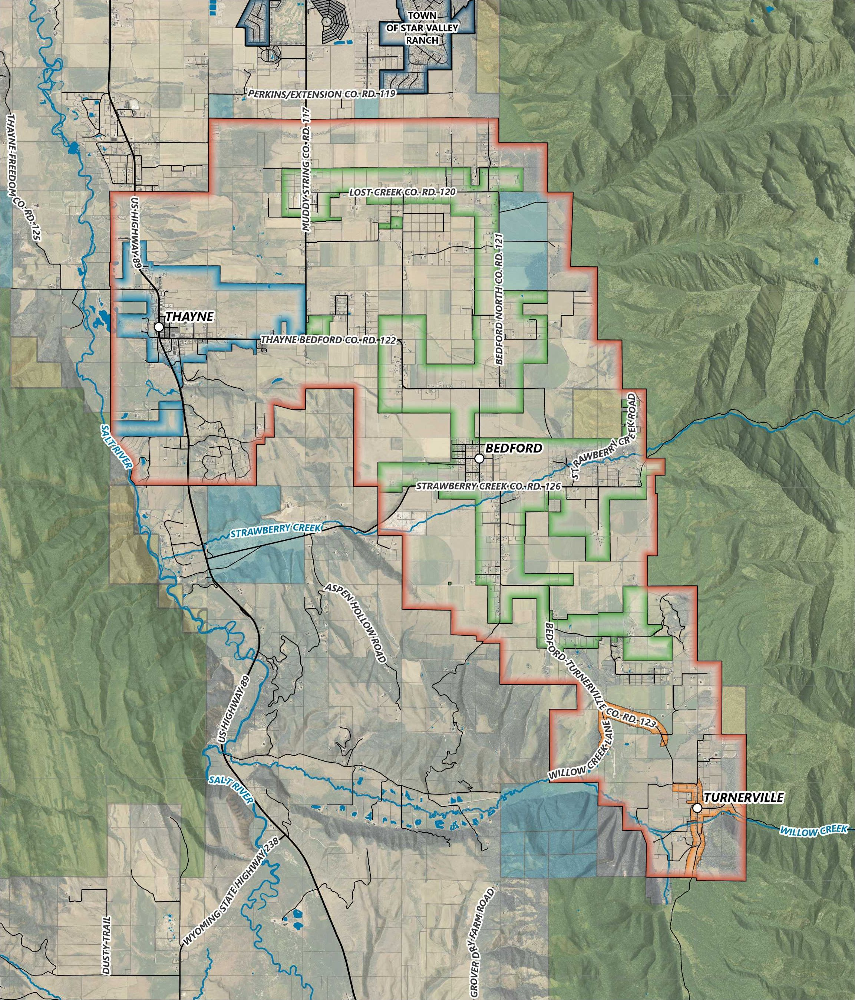
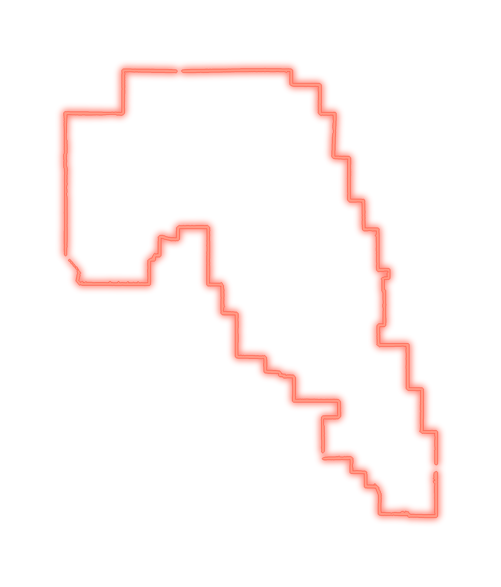
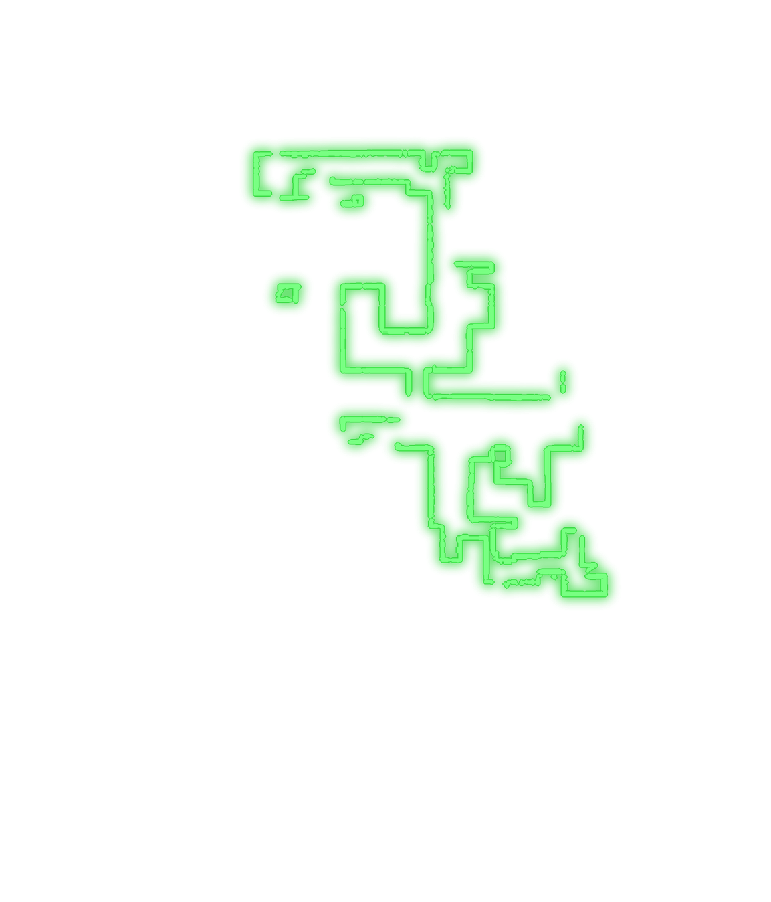

Community input needed
Where does your water come from, and where should it go next?
A regional study is looking at how the water systems around Bedford, Turnerville and Thayne could work together. Your answers help shape what it recommends.
About the study
A regional look at water in Star Valley
The Wyoming Water Development Commission is funding a regional water supply study for Bedford and Turnerville, including the surrounding areas.
One goal is to find out whether connecting existing community water systems makes sense, and whether service could someday reach areas that are not served by a community system today. No decisions have been made. Community input comes first.
Water systems in the study
Four public water systems serve the study area today.
- TurnervilleWater & Sewer District
- BedfordWater & Sewer District
- ThayneTown system
- North FortySubdivision system
Planning boundaries
Explore the study area
Choose a boundary to highlight it and zoom in, or zoom and drag the map yourself. You can also download the full map as a PDF.
Highlight a boundary
Boundaries are approximate and shown for planning purposes. Tap or click a boundary name again to turn the highlight off.
Showing the full map.



Why we are asking
If you use a private well
Would you ever want to connect to a community system? Knowing how many households are interested helps the study judge whether regional service is realistic.
If you use a community system
How is your water today? Concerns about quality, reliability, pressure or cost point the study toward the improvements that matter most.
If you own land
Access to water can affect how land is developed. Your plans over the next 10 years help the study project future demand.
Get involved
Two ways to take part
Take the online survey
About five minutes on any phone, tablet or computer. Scan the QR code on your mailer or use the button below.
Start the surveyReturn the mailed survey
Prefer paper? Fill out the survey that came in the mail and send it back using the instructions on the form.
Common questions
Do not see your question? Email the project team and we will get back to you.
survey@bedfordturnervillewater.comDoes this study mean a new water line is coming to my property?
No. The study is a feasibility review. It looks at options and costs so local leaders and the community can decide what, if anything, to pursue.
Is the survey anonymous?
Yes. We do not ask for your name. Contact details at the end are optional and only used to send you project updates.
Who is doing the study?
The Wyoming Water Development Commission funds the study. Sunrise Engineering, with Hinckley Consulting, is carrying it out.
I live outside a town or district. Does this include me?
Yes. Households on private wells in the areas between the communities are part of the study area, and we want to hear from them.
Questions? Talk to the project team.
survey@bedfordturnervillewater.com · [phone number]